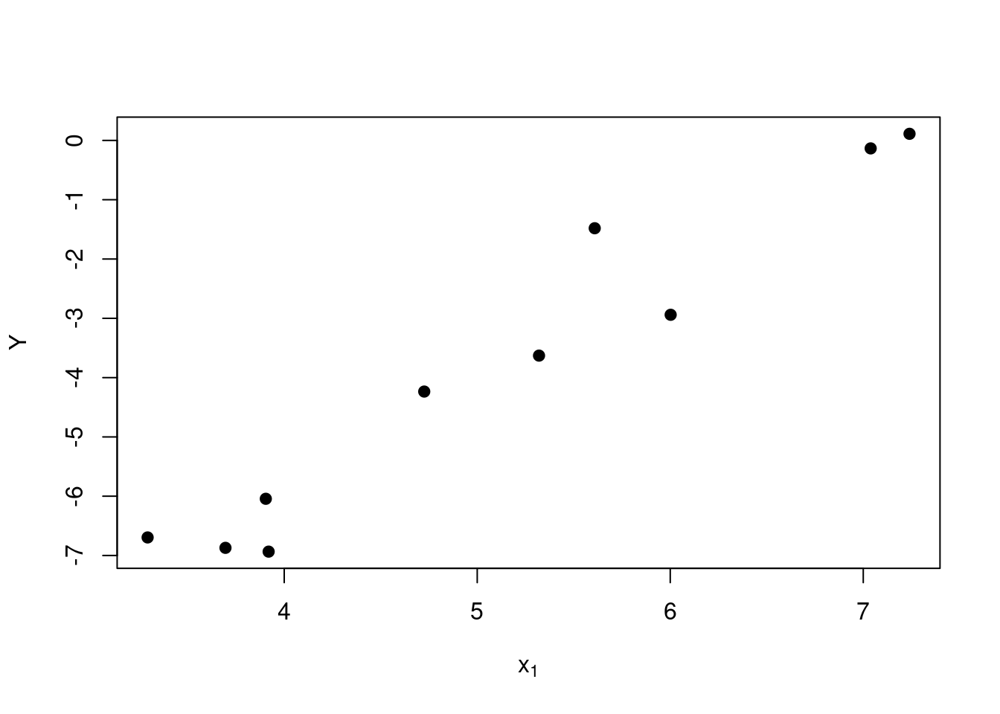
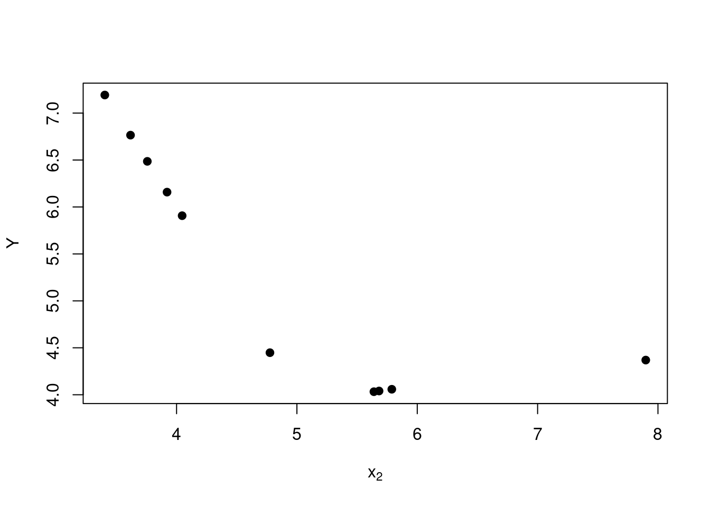
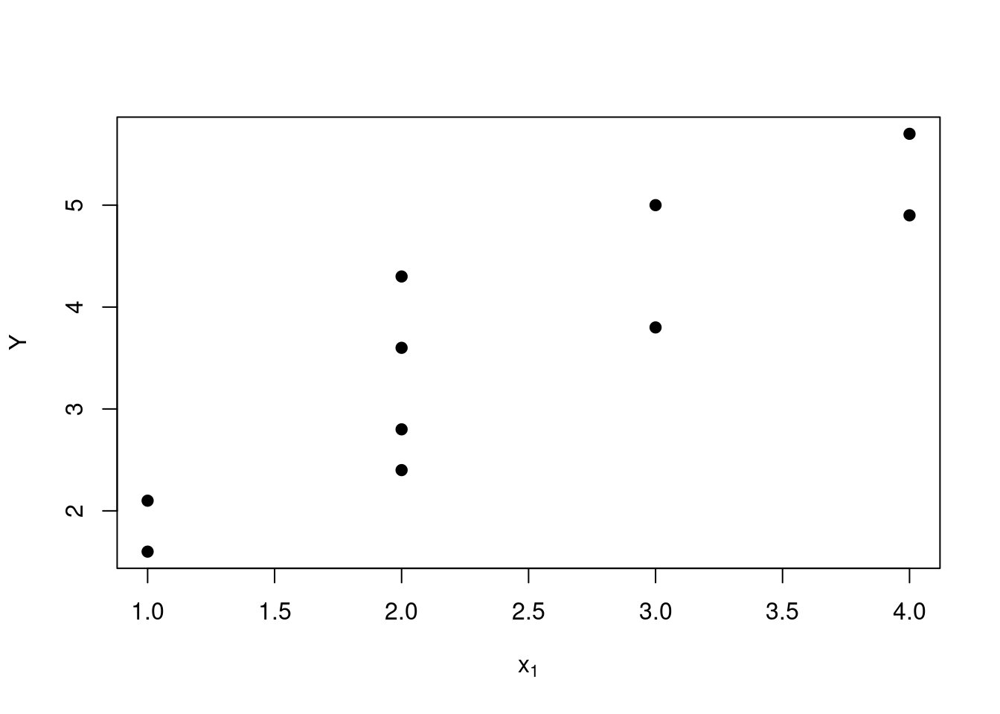
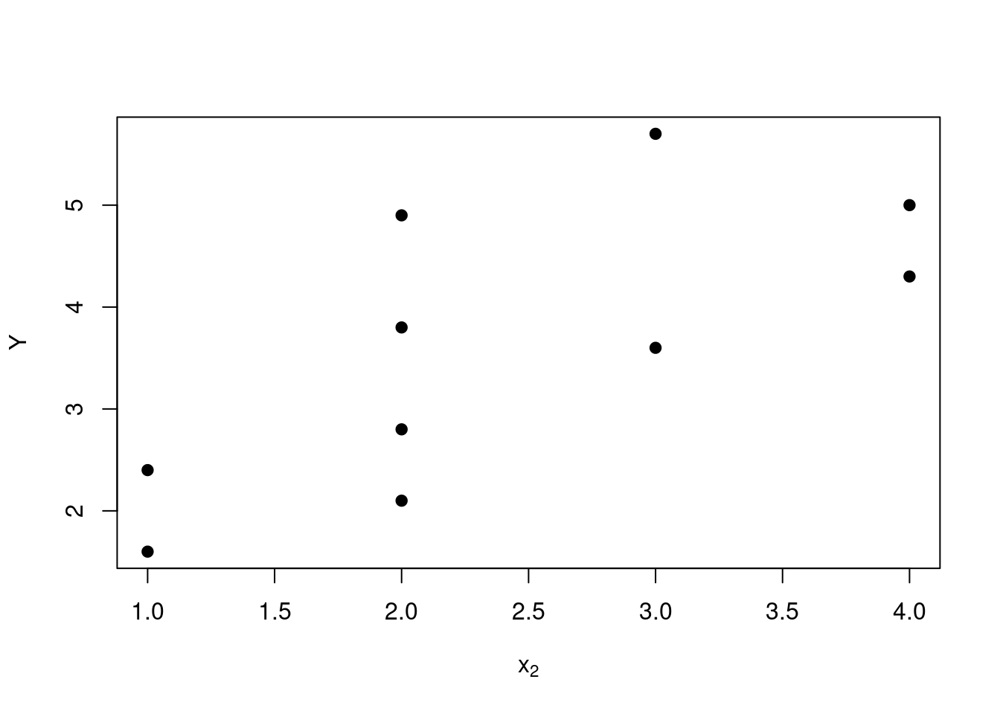
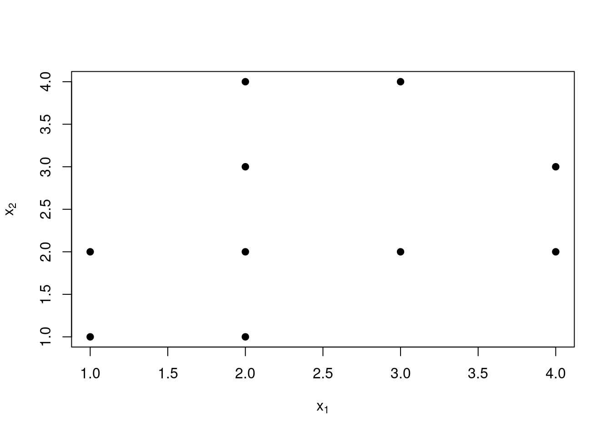

Chapter 3 Multiple Linear Regression
3.1 Motivation and regression model
It is natural to consider the extension of simple linear regression into the case where we have more than one possible predictor variable. Some examples of such modelling situations are given in the table below.
In each of these examples, there may or may not be a relationship between the response variable and each potential explanatory variable. We start by considering a model containing all of the potential explanatory variables, and then investigate whether we can obtain a good fit without some of them.
3.1.1 The multiple regression model
In multiple regression, we again assume a linear model, similar to the model used in simple linear regression. The assumed model for \(k\) predictor variables \(\left\{x_{1}, x_{2}, \ldots, x_{k}\right\}\) is: \[Y\ \sim\ N(\alpha + \ \beta_{1}x_{1} + \ \beta_{2}x_{2} + ...\ + \ \beta_{k}x_{k}, \sigma^{2})\]
We make no distributional assumptions about the explanatory variables \(\left\{x_{1}, x_{2}, \ldots, x_{k}\right\}\). In fact, some of these variables could be functions of the others e.g. \(x_{2} = x_{1}^{2}\) or \(x_{3} = \log{(x_{1})}\) or \(x_{4} = \frac{x_{1}}{x_{3}}\).
In this chapter we look at how to fit such models, assessing the model fit, and how to ensure we avoid building over-complicated models.
We assume that we have \(n\) observations and \(k\) predictor variables – i.e. our data consists of: \[ \begin{pmatrix} y_{1}\\ y_{2}\\ \vdots\\ \vdots\\ y_{n}\\ \end{pmatrix}, \qquad \begin{pmatrix} x_{11} & x_{21} & \ldots & x_{k1} \\ x_{12} & x_{22} & \ldots & x_{k2} \\ \vdots & \ldots & \ldots & \vdots \\ \vdots & \ldots & \ldots & \vdots \\ x_{1n} & x_{2n} & \ldots & x_{kn} \\ \end{pmatrix} \]
where \(x_{ij}\) is the \(j^{th}\) (\(j=1,\ldots, n\)) observation on the \(i^{th}\) explanatory variable (\(i=1,\ldots, k\)).
3.2 Exploratory analysis
3.2.1 Examining linearity
It is always recommended to plot the response variable \(Y\) against each of the explanatory variables \(x_i\) in turn, in particular to identify where a linear relationship is not appropriate.
For instance, Figure 3.1 suggests a linear relationship is appropriate between \(x_1\) and \(Y\), while the relationship between \(x_2\) and \(Y\) shown in Figure 3.2 seems to be non-linear.

Figure 3.1: Data indicating a linear relationship.

Figure 3.2: Data indicating a non-linear relationship.
If a linear relationship is not appropriate (e.g. in Figure 3.2), then we consider transforming the explanatory variable and re-plotting to check if the linear relationship is improved. Common useful transformations, are \(x_{i}^{2}\), \(\log(x_{i}),\) \(e^{x_{i}}\).
Note: even if for one or more explanatory variables there is no apparent relationship between \(Y\) and \(x_{i}\), we should not decide to omit the explanatory variable(s) from the model – the relationship between the explanatory variable and \(Y\) may be masked by the effects of other explanatory variables.
3.2.2 Identifying multicollinearity
It is also advised to plot the explanatory variables against each other, pairwise (\(x_{1}\) against \(x_{2}\), \(x_{1}\) against \(x_{3}\), \(x_{2}\) against \(x_{3}\) etc) to identify a phenomenon called multicollinearity (or sometimes just collinearity) – when two or more of the predictor variables are very highly correlated. If multicollinearity occurs it can have major implications for estimating the parameters of the model.
As an extreme example, consider the following case. Suppose we are fitting a model \[Y = \ \alpha + \ \beta_{1}x_{1} + \ \beta_{2}x_{2}\]
but that \(x_{1} = 2x_{2}\) (i.e there is perfect correlation between \(x_{1}\) and \(x_{2}\)).
If \(\ x_{1} = 2x_{2}\), then \(x_{1} - 2x_{2} = 0\).
Therefore, I can add any multiple of \(x_{1} - 2x_{2}\) to the model without making any difference to it.
For instance: \[Y = \ \alpha + \ \beta_{1}x_{1} + \ \beta_{2}x_{2} + \ \gamma(x_{1} - 2x_{2})\] \[= \ \alpha + \ {(\beta}_{1} - \gamma)x_{1} + \ {(\beta}_{2} - 2\gamma)x_{2}\]
So, two different models with different sets of coefficients give exactly the same result, so estimating the coefficients is an impossible task! However, multicollinearity is only a potential problem if we need to estimate the slope parameters of the model (e.g. \(\beta_{1}\) and \(\beta_{2}\) in the example above) – if we are only interested in forecasting the value of \(Y\) for a given \(x_{1},x_{2},\ldots,x_{k}\), but not interested in the parameters of the model, then multicollinearity does not hinder us.
Common causes of multicollinearity
There are many reasons why multicollinearity may come about. Some of these reasons are:
Improper use of dummy variables e.g. if we are using a dummy variable to indicate 4 different regions, use only 3 dummy variables – the 4 variable would be correlated with a combination of the first 3
Including variables computed from other variables in the equation (e.g. husband’s income, wife’s income, household income)
Effectively including the same variable twice e.g. height above sea-level in metres and in in feet
But sometimes, it’s just that two or more variables are highly correlated, and the results are large standard errors (and hence difficult to obtain significant results) and coefficient estimates which can vary substantially from one sample to the next – sometimes even swapping sign!
Methods of detecting multicollinearity
We can examine data for multicollinearity in the following ways:
Checking stability of coefficients in two different samples ( e.g. dividing your sample in 2). If the estimates of the coefficients are very different, this may indicate multicollinearity
If the test for individual coefficients show they are not significant, but the test for the regression is significant, multicollinearity may be a cause
Trying a slightly different, ``innocuous’’ model (e.g. adding or dropping a variable) and noting large shifts in the estimates of the coefficients.
Examining correlations between variables
We detect potential multicollinearity by looking at correlation coefficients. If we define:
\[S_{yy} = \ \sum_{j = 1}^{n}{y_{j}^{2}} - \ \frac{1}{n}\left({\sum_{j = 1}^{n}y_{j}}\right)^{2}\] \[S_{x_{i}x_{i}} = \ \sum_{j = 1}^{n}{x_{ij}^{2}} - \ \frac{1}{n}\left({\sum_{j = 1}^{n}x_{ij}}\right)^{2}\] \[S_{yx_{i}} = \ \sum_{j = 1}^{n}{y_{j}x_{ij}} - \ \frac{1}{n}\left(\sum_{j = 1}^{n}{y_{j}}\right)\left(\sum_{j = 1}^{n}x_{ij}\right)\] \[S_{x_{i}x_{k}} = \ \sum_{j = 1}^{n}{x_{ij}x_{kj}} - \ \frac{1}{n}\left(\sum_{j = 1}^{n}{x_{ij}}\right)\left(\sum_{j = 1}^{n}x_{kj}\right)\]
then the correlation between the two predictor variables \(X_{i}\) and \(X_{k}\) can be estimated as: \[\text{Corr}(x_{i}, x_{k}) = \ \frac{S_{x_{i}x_{k}}}{\sqrt{S_{x_{i},x_{i}}\times S_{x_{k},x_{k}}}}\]
There are various proposed tests for detecting collinearity using correlation coefficients, but a useful rule of thumb is that a correlation between two predictor variables greater than 0.75 or below -0.75 are exhibiting worrying levels of collinearity. This is not a foolproof test, however, because:
Smaller samples probably need a smaller cut-off than 0.75 or -0.75
One independent variable may be a linear combination of several other independent variables (and hence producing the problems of multicollinearity), but is not highly correlated with any single one of them
Reacting to multicollinearity
If you are interested in estimates of the regression parameters, and multicollinearity is a problem, you have several options available:
check for improper use of dummy variables
collect more data, as this reduces coefficients’ standard errors
remove one of the correlated variables – perhaps by fitting the model with each of the 2 correlated variables omitted, and choosing the variable which alone provides the best fit.
accept that multicollinearity is a problem, and be aware of the consequences
3.2.3 Fitting the model
As with the simple linear regression model, we choose the values of parameters of the model which minimise the sum of squared differences between the observed \(\left\{ y_{i} \right\}\) and the fitted \(\{{\hat{y}}_{i}\}\), i.e. we minimise: \[S(\alpha,\beta_1,\ldots,\beta_k) = \sum_{i = 1}^{n}(y_{i} - {\hat{y}}_{i})^{2} = \sum_{i = 1}^{n}\left(y_{i} - \left(\hat{\alpha} + {\hat{\beta}}_{1}x_{1i} + \ldots + {\hat{\beta}}_{k}x_{ki}\right)\right)^{2}\]
Again, we find these values by differentiating S with respect to each of the parameters in turn, and solving the resulting equations.
With \(k\) predictor variables, minimising \(S\) is the equivalent of solving the following \(k+1\) : \[\tag{n.e. 1} \hat{\alpha} + {\hat{\beta}}_{1}{\bar{x}}_{1} + {\hat{\beta}}_{2}{\bar{x}}_{2} + \ldots + {\hat{\beta}}_{k}{\bar{x}}_{k} = \bar{y}\] \[\tag{n.e. 2}{\hat{\beta}}_{1}S_{x_{1}x_{1}} + {\hat{\beta}}_{2}S_{x_{1}x_{2}}+\ldots + {\hat{\beta}}_{k}S_{x_{1}x_{k}} = S_{x_{1}y}\] \[\tag{n.e. 3}{\hat{\beta}}_{1}S_{x_{2}x_{1}} + {\hat{\beta}}_{2}S_{x_{2}x_{2}}+\ldots + {\hat{\beta}}_{k}S_{x_{2}x_{k}} = S_{x_{2}y}\] \[\vdots \quad \quad \quad \vdots \quad \quad \quad \vdots \quad \quad \quad \vdots \quad \quad \quad \vdots \] \[\tag{n.e. k+1}{\hat{\beta}}_{1}S_{x_{k}x_{1}} + {\hat{\beta}}_{2}S_{x_{k}x_{2}}+\ldots + {\hat{\beta}}_{k}S_{x_{k}x_{k}} = S_{x_{k}y}\]
(remembering that \(S_{x_{i}x_{j}} = S_{x_{j}x_{i}}\))
When \(k=1\), these normal equations are exactly equivalent to the two equations used to solve for \(\hat{\alpha}\) and \(\hat{\beta}\) in the case of simple linear regression. In this case, the solutions are: \[{\hat{\beta}}_{1} = \frac{S_{x_{1}y}}{S_{x_{1}x_{1}}}\] \[\hat{\alpha} = \bar{y} - {\hat{\beta}}_{1}{\bar{x}}_{1}\]
When \(k=2\), the normal equations can be solved to give: \[{\hat{\beta}}_{2} = \frac{S_{x_{2}y}S_{x_{1}x_{1}} - S_{x_{1}y}S_{x_{1}x_{2}}}{S_{x_{1}x_{1}}S_{x_{2}x_{2}} - S_{x_{1}x_{2}}^{2}}\] \[{\hat{\beta}}_{1} = \frac{S_{x_{1}y} - {\hat{\beta}}_{2}S_{x_{1}x_{2}}}{S_{x_{1}x_{1}}}\] \[\hat{\alpha} = \bar{y} - {\hat{\beta}}_{1}{\bar{x}}_{1} - {\hat{\beta}}_{2}{\bar{x}}_{2}\] If \(k > 2\), the formulae for \(\hat{\alpha},\ {\hat{\beta}}_{1},\ {\hat{\beta}}_{2},\ldots,\ {\hat{\beta}}_{k}\) become unmanageable, and we rely on estimating the parameters computationally.
In order to estimate the variance \(\sigma^{2}\), we use the sum of squared residuals \[{\hat{\sigma}}^{2} = \frac{1}{n - (k + 1)}\sum_{}^{}{(y_{i} - {\hat{y}}_{i})^{2}}\] where \[{\hat{y}}_{i} = \hat{\alpha} + {\hat{\beta}}_{1}x_{1i} + \ldots + {\hat{\beta}}_{k}x_{ki}\] Again, note here that the denominator of the fraction is \(n\), the number of data points, minus \((k + 1)\), the number of parameters estimated.
The calculation of the \(\left\{ {\hat{y}}_{i} \right\}\) can be tedious, especially if \(k\) is large – so, unless we are specifically interested in the values of \(\left\{ {\hat{y}}_{i} \right\}\), we will delay estimating \({\hat{\sigma}}^{2}\) until we have completed an ANOVA table for assessing the significance of the model.
3.2.4 Testing
Our primary interest is to answer the question: ``Is the regression of \(Y\) on \(x_{1}, x_{2}, \ldots, x_{k}\) significant?’’
In statistical terminology, we want to test: \[H_{0}:\beta_{1} = \beta_{2} = \ldots = \beta_{k} = 0 \quad vs. \quad H_{1}:\mbox{at least one}\ \beta_{j} \neq 0\]
As before, we construct a test statistic by examining the sum of squares in an ANOVA table:
But, \[\sum_{i = 1}^{n}{(y_{i} - \bar{y})}^{2} = S_{yy}\]
and \[\sum_{i = 1}^{n}{({\hat{y}}_{i} - \bar{y})}^{2} = \ \sum_{j = 1}^{k}{{\hat{\beta}}_{j}S_{x_{j}y}}, \]
which is easier to calculate.
Since the Sum of Squares have to add up, we can easily calculate the Residual Sum of Squares using: \[\mbox{Residual Sum of Squares} = \mbox{Total Sum of Squares} - \mbox{Regression Sum of Squares}\]
Our test statistic is the regression mean square divided by the residual mean square: \[ F_{obs} = \frac{\sum_{i = 1}^{n}{(\hat{y}_{i} - {\bar{y}}_{i})}^{2}/(k)}{\sum_{i = 1}^{n}{(y_{i} - {\hat{y}}_{i})}^{2}/(n - (k+1))}\]
This statistic follows an \(F_{k,n - (k + 1)}\) distribution under the null hypothesis, so we reject \(H_{0}\) when \(F_{obs} > F_{1-\alpha, k,n - (k + 1)}\).
3.2.5 A worked example
Example 3.1 The data below show the measured values for the response variable \(Y\) and the \(x_1\) and \(x_2\) variables. In this example \(k=2\) and \(n=10\).
We start by looking at plots of \(Y\) against \(x_{1}\) (Figure 3.3) and against \(x_{2}\) (Figure 3.4). From the plots, a linear relationship seems appropriate – perhaps more clearly for \(x_{1}\) than for \(x_{2}\).

Figure 3.3: The relationship between \(x_1\) and \(Y\).

Figure 3.4: The relationship between \(x_2\) and \(Y\).

Figure 3.5: The relationship between \(x_1\) and \(x_2\).
We also produce a plot of \(x_{1}\) against \(x_{2}\) (Figure 3.5) to investigate collinearity. There is evidence of some linear relationship between the two predictor variables, which we can quantify by calculating the correlation between them.
The expanded data table which allows us to calculate this correlation, the estimates of the parameters, and compile the ANOVA table is also given below.
So, \[\begin{eqnarray*} \bar{y} &=& 3.62,\ {\bar{x}}_{1} = 2.4,{\bar{x}}_{2} = 2.4\\ S_{x_{1}x_{1}} &=& 68 - \frac{24\times 24}{10} = 10.4\ \\ S_{x_{2}x_{2}} &=& 68 - \frac{24\times 24}{10} = 10.4\\ S_{y,y} &=& 147.96 - \frac{36.2\times 36.2}{10} = 16.916\\ S_{x_{1}y} &=& 98.7 - \frac{24\times 36.2}{10} = 11.82\\ S_{x_{2}y} &=& 96.3 - \frac{24\times 36.2}{10} = 9.42\\ S_{x_{1}x_{2}} &=& 61 - \frac{24\times 24}{10} = 3.4\\ \end{eqnarray*}\]
(Note that here \(S_{x_{1}x_{1}} = \ S_{x_{2}x_{2}}\) – this only occurs in the very exceptional case where the \(n\) values of \(x_{1}\) and the \(n\) values of \(x_{2}\) are the same values, but in a different order. Normally, \(S_{x_{1}x_{1}} \neq \ S_{x_{2}x_{2}}\).)
The correlation of \(x_{1}\) and \(x_{2}\) is therefore: \[\frac{S_{x_{1}x_{2}}}{\sqrt{S_{x_{1}x_{1}}\times S_{x_{2}x_{2}}}} = 0.327 \]
which is well within the limits of \(\pm\) 0.75, our rule-of-thumb collinearity cut-offs. To fit the model \[Y_{i}\sim N(\alpha + \beta_{1}x_{1i} + \beta_{2}x_{2i},\sigma^{2})\]
using our normal equations, we calculate: \[{\hat{\beta}}_{2} = \frac{9.42\times 10.4 - 11.82\times 3.4}{10.4\times 10.4 - \ {3.4}^{2}} = 0.598\] \[{\hat{\beta}}_{1} = \frac{11.82 - 0.598\times 3.4}{10.4} = 0.941\] \[\hat{\alpha} = 3.62 - 0.941\times 2.4 - 0.598\times 2.4 = \ - 0.074\]
We leave estimating \(\sigma^{2}\) until we compile the ANOVA table, for which we calculate: \[\mbox{Total Sum of Squares} = S_{yy} = 16.916\] \[\mbox{Regression Sum of Squares} = {\hat{\beta}}_{1}S_{x_{1},y} + {\hat{\beta}}_{2}S_{x_{2}y}\] \[= 0.941\times 11.82 + 0.598\times 9.42 = 16.756\] \[\mbox{Residual Sum of Squares} = \mbox{Total Sum of Squares} - \mbox{Regression Sum of Squares}\] \[= 16.916 - 16.756\ = \ 0.160\]
So our ANOVA table is:
Our observed test statistic is therefore \(\frac{8.378}{0.023}\) = 366.6. Is this unusually large for an \(F_{2,7}\) distribution? \(F_{0.995, 2,7} = 12.40,\) so yes, our observed test statistic IS unusually large. We therefore have very good evidence to reject \(H_{0}\) and to conclude that the regression of \(Y\) on \(x_{1}\) and \(x_{2}\) is statistically significant.
As well as the model validation techniques for checking the model assumptions, as described in Section 2.5, there is an additional layer of model choice required for multiple regression – if we have shown that the model including \(k\) predictor variables is statistically significant, do we need all \(k\) predictors or can we manage with fewer? Fewer variables can mean reduced costs in data collection, and can enable easier interpretation of our fitted model.
There are three main types of iterative procedures for helping you to decide which predictor variables to keep in a multiple regression model:
3.3 Backward elimination
Here, we describe the process of Backward Elimination, and carry out the calculations for our Example 3.2.5. Backward elimination involves partitioning the sum of squares due to the regression on all \(k\) variables into the sum of squares due to the regression on \((k-1)\) variables, and a remainder which we can think of as being the extra explained by the variable we are ``eliminating’’. If this remainder is sufficiently small, we can omit this variable from the model and repeat the process for the variable with the next lowest correlation with the response variable.
If we decide to omit \(x_{j}\) from the model, we then repeat the process to see if we should remove another variable – don’t forget that in this subsequent check, the reduced model from above now becomes the total model against which we compare our ``reduced-even-more’’ model.
For the Example 3.1, returning to our full model ANOVA Table:
Should we first investigate excluding \(x_{1}\) or \(x_{2}\) from the model? To decide, we calculate correlations: \[\text{Corr}(Y,x_{1}) = \frac{S_{x_{1}Y}}{\sqrt{S_{x_{1}x_{1}}S_{YY}}} = 0.891 \] \[\text{Corr}(Y,x_{2}) = \frac{S_{x_{2}Y}}{\sqrt{S_{x_{2}x_{2}}S_{YY}}} = 0.710\]
So, we consider dropping \(x_{2}\) from the model, leaving a model of the form: \[Y_{i}\sim N(\alpha + \beta_{1}x_{1i},\sigma^{2})\]
for which the ANOVA table is:
with \({\hat{\beta}}_{1} = 1.137\) and \(\hat{\alpha} = 0.892.\)
Hence, the increase in the sum of squares caused by including \(x_{2}\) in our model is 16.757 – 13.434 = 3.322.
Our ANOVA table for testing whether \(x_{2}\) should be included in the model is:
To test: \[H_{0}: \text{Not worth including} \ x_{2}\ \text{in the model}\] \[H_{1}: \text{It IS worth including} \ x_{2}\ \text{in the model}\]
we calculate the test statistic \[F_{obs} = \ \frac{\text{Additional\ }x_{2}\ \text{Mean Square}}{\text{Residual\ Mean\ Square}}\] \[= \ \frac{3.322}{0.023} = 144.4\]
\(F_{0.995,1,7}\) = 16.24, so this value of \(F_{obs}\) is highly significant. We therefore have strong evidence to suggest that the model with both \(x_{1}\) and \(x_{2}\) gives a significantly better fit to the data than a model with only \(x_{1}\).
3.4 Multiple regression Using R
As with linear regression, we can easily use to perform the multiple linear regression model fitting and producing residual plots.
Adding a trend line to a plot, of course, is not appropriate for multiple regression analysis but can still be used with bivariate plots to check for linear relationships and perhaps high correlation between independent variables.
Calculating coefficients etc using formulae and functions can be done but is repetitive and unnecessary.
The lm command can fit multiple linear regression models as below; this will be demonstrated in more detail in the problem classes.
x1 = c(1, 1, 2, 2, 2, 3, 2, 4, 4, 3)
x2 = c(1, 2, 1, 2, 3, 2, 4, 2, 3, 4)
Y = c(1.6, 2.1, 2.4, 2.8, 3.6, 3.8, 4.3, 4.9, 5.7, 5.0)
mlrmodel = lm(Y ~ x1 + x2)
mlrmodel##
## Call:
## lm(formula = Y ~ x1 + x2)
##
## Coefficients:
## (Intercept) x1 x2
## -0.07391 0.94099 0.598143.4.1 Evaluating individual regression coefficients
In section 3.2.4 we tested whether at least one (but not necessarily all) regression coefficients are not equal to zero, and thus useful for inclusion in the regression model. Our hypotheses were: \[H_{0}:\beta_{1} = \beta_{2} = \ldots = \beta_{k} = 0\] \[H_{1}:\mbox{at least one } \beta_{j} \neq 0\]
We can also test the independent variables individually to identify which coefficients may be equal to 0 and which are not. If one regression coefficient \((\beta_{1},\beta_{2},\ldots, \beta_{k})\) could equal 0, then we can assume that particular variable is of no value in explaining variation in the predicted variable.
With \(k\) independent variables, we therefore conduct \(k\) separate tests of hypothesis: \[H_{0}:\beta_{1} = 0, H_{0}:\beta_{2} = 0 \ldots{}\ldots{}, H_{0}:\beta_{k} = 0\] \[H_{1}:\beta_{1} \neq 0, H_{1}:\beta_{2} \neq 0 \ldots{}\ldots{}, H_{1}:\beta_{k} \neq 0\]
In order to test these \(k\) hypotheses, we need the sampling distribution of each estimate.
The derivation of these distributions are beyond the scope of this course, so we will use the output from the lm output, using the summary command.
For our worked Example 3.1 discussed above, the output is shown below.
##
## Call:
## lm(formula = Y ~ x1 + x2)
##
## Residuals:
## Min 1Q Median 3Q Max
## -0.20435 -0.10776 0.00559 0.08370 0.21553
##
## Coefficients:
## Estimate Std. Error t value Pr(>|t|)
## (Intercept) -0.07391 0.14572 -0.507 0.628
## x1 0.94099 0.04945 19.028 2.75e-07 ***
## x2 0.59814 0.04945 12.095 6.03e-06 ***
## ---
## Signif. codes: 0 '***' 0.001 '**' 0.01 '*' 0.05 '.' 0.1 ' ' 1
##
## Residual standard error: 0.1507 on 7 degrees of freedom
## Multiple R-squared: 0.9906, Adjusted R-squared: 0.9879
## F-statistic: 368.9 on 2 and 7 DF, p-value: 8.052e-08To test the \(k\) null hypotheses, we compute the t-statistic for each coefficient and compare it with the appropriate critical value from the t-distribution with \(n-(k+1)\) degrees freedom. For instance, in our example, for a two-tailed test with 7 degrees of freedom, using the 0.05 significance level, the critical value is 2.365.
For our 2 variables, the t-statistics are
\[t_{1} = \frac{0.940994}{0.049452} = 19.02833\] \[t_{2} = \frac{0.598137}{0.049452} = 12.09523\]
Both are larger than the critical value of 2.365, so we have evidence to reject both null hypotheses, and assume that both \(\beta_{1} \neq 0\) and \(\beta_{2} \neq 0\). Notice that these test statistics feature in the output for the worked example above.
Notice that if we were to compute the 95% confidence intervals for the \(\beta_1\) and the \(\beta_2\) parameters, they would not contain 0 as a value.
3.4.2 The (adjusted) coefficient of multiple determination
In multiple regression, the coefficient of multiple determination is the proportion of variation in the dependent variable, \(Y\), explained by the set of independent variables \(x_{1},x_{2},\ldots,x_{k}\). It is also known as , and is calculated as: \[R^{2} = \frac{\mbox{Sum of Squares (Regression)}}{\mbox{Sum of Squares (Total)}} = 1 - \frac{\mbox{Sum of Squares (Residual)}}{\mbox{Sum of Squares (Total)}}\] or \[1 - R^{2} = \frac{\mbox{Sum of Squares (Residual)}}{\mbox{Sum of Squares (Total)}}\]
In multiple regression, each additional independent variable can only make the regression more accurate and hence increase the coefficient of multiple determination. So the coefficient of multiple determination increases just because a new variable has been added, regardless of whether the added variable is a good predictor of the dependent variable. Therefore, the coefficient of multiple determination needs to be adjusted for the number of variables within the regression model.
The is given by \[R_{\text{adj}}^{2} = 1 - \frac{\frac{\mbox{Sum of Squares (Residual)}}{n - (k + 1)}}{\frac{\mbox{Sum of Squares (Total)}}{n - 1}}\]
3.5 Evaluating the assumptions of multiple regression
Graphical residual analysis, similar to that used for Linear Regression, can be used to evaluate the appropriateness of our multiple regression assumptions, namely:
The residuals are independent (i.e. that successive observations of the predicted variable are not correlated)
There is a linear relationship between the predicted variable and each of the predictor variables
The variation in the residuals do not vary with the size of the predicted variable.
The residuals are normally distributed
In addition, in multiple regression we need to check for multicollinearity i.e. the high correlation between two or more predictor variables.
3.6 Qualitative independent variables
To date, we have investigated only quantitative independent variables –
in other words, numerical in nature. Multiple regression can also
accommodate qualitative variables such as gender. We do this by
introducing dummy variables with only two possible outcomes – coded 0
for one outcome, 1 for the other outcome (e.g. male=0, female=1).
Analysis with a mixture of qualitative and quantitative variables is
carried out in exactly the same way as model with only qualitative
predictor variables.
3.7 Multiple regression models with interaction
It is feasible that two or more independent variables can interact. For instance, we may wish to regress weight loss for a sample of subjects based on whether the subjects follow a diet (\(x_{1}\), yes or no), and their exercise regime (\(x_{2}\), none, low, medium, high). If subjects follow their diet and follow a high exercise regime, weight loss may be more than the sum of loss due to the diet effect and loss due to the exercise effect.
We examine interaction by including an additional, interaction term which is the product of the two predictor variable. In the weight loss example, the two-variable model with interaction would be: \[Y = \alpha + \beta_{1}x_{1} + \beta_{2}x_{2} + \beta_{3}x_{1}x_{2}\] We treat the interaction variable \(x_{1}x_{2}\) in the same way as any other predictor variable. The significance of the interaction term can be tested as described in section 3.2.4.